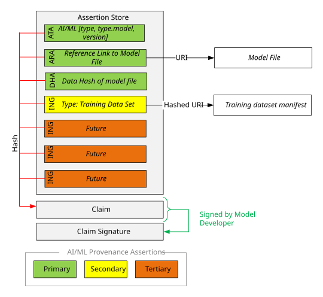
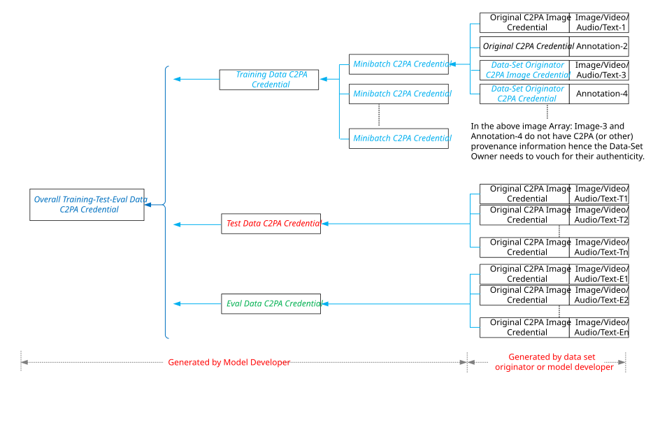

Guidance for Artificial Intelligence and Machine Learning

This work is licensed under a Creative Commons Attribution 4.0 International License.
1. Introduction
The C2PA specification can be used to add cryptographic information to detect the tampering of media files and streams. Similarly, the C2PA framework can also be used in artificial intelligence (AI) and machine learning (ML) systems to indicate the tampering of datasets, software, and models which are utilized during training and inference. This document provides guidance about how C2PA’s Content Credentials can be employed by AI and ML systems.
Recent research has demonstrated that ML systems are susceptible to different forms of poisoning attacks. For these types of attacks, the goal of the adversary is to cause the model to make incorrect predictions which can either be targeted or non-targeted attacks. In targeted attacks, a classifier can be maliciously trained to provide a backdoor that can be exploited by the attacker to produce a specific incorrect prediction class. One example of a targeted attack is to modify a face recognition system to allow the adversary to successfully log onto a computer as someone else. A model that has been poisoned using an untargeted attack may generate any result that is incorrect. At a minimum, the ML system must protect against three types of poisoning attacks including data poisoning, software poisoning, and model poisoning attacks [Stokes21]. Content Credentials can be used to help prevent these types of attacks by protecting the data, software, and models.
2. Data Poisoning Attacks
Data poisoning attacks are designed to corrupt the data used to train machine learning models. This can be done by adding malicious data to the training set or by modifying existing training data. During inference, the data that is input to the model for prediction can also be poisoned leading to an incorrect prediction.
Many of the existing training sets are stored in a single file, and these files can be protected by a single Content Credential. The dataset’s hash, which is stored in the Content Credential, can be used to verify that it has not been modified by a data poisoning attack.
In other settings, the training and inference data may be split across multiple files, including media files such as images which are used to train an object detection model. In addition, the training or inference data may be streamed. In these scenarios, the data may be protected by a top-level Content Credential which includes each of the files as ingredients. In the case where the ingredients are media files, they may contain their own Content Credentials.
In images and videos, a C2PA Manifest can be embedded in the media file. However, existing machine learning datasets are either text or binary files which prevents the embedding of a C2PA Manifest in the file. In these cases, the C2PA Manifest can be stored in a separate, sidecar file. The C2PA Manifest can then use the Asset Reference Assertion to provide a URI to the dataset file or streamed data chunk.
3. Software Poisoning Attacks
Software poisoning attacks are designed to maliciously modify the software used to train a machine learning model or use a model to make a prediction. This can be done by modifying the training and inference software or any additional packages or libraries that are used during training and inference.
Many countries are concerned with software poisoning attacks and have taken steps to help mitigate such attacks. The European Union Cybersecurity Act 2019/881 specified a framework for certificates in [EU19]. To help prevent software supply chain attacks, the US Cybersecurity Executive Order [Biden21] requires that all software or services purchased by the US federal government be governed by a software bill of materials (SBOM). SPDX is one popular standard which is used by some software vendors to provide an SBOM. C2PA utilizes and builds upon the existing SBOM metadata standards for software. One or more SPDX text files provide metadata about the software used to build an application, library or service. Each software file and its corresponding SPDX file can then be protected by a Content Credential.
In some cases, C2PA can improve existing SBOM standards. In one example, SPDX files in the current standard (v2.3) are not signed and its contents, including the FileChecksum, can be modified by an attacker. C2PA can be used to sign the SPDX file to prevent tampering.
4. Model Poisoning Attacks
Once a model has been trained with C2PA-protected data and software, it can then be used to make secure predictions during inference. However, the model can still be poisoned by modifying its architecture or parameters. To help prevent model poisoning attacks, Content Credentials can be used to protect the model by providing a signature which can be verified by the user.
5. Other Model Attacks
Malicious data inserted for prediction can also be used to invert or extract the model. Data with a validated C2PA signature traceable to the sensing device provides assurance that the input data is not engaging in these oracle attacks.
There are also non-poisoning trojan attacks which are aimed at the model and do not change the model’s accuracy significantly. These types of attacks insert a malicious payload in low importance layers (or add additional fake layers). C2PA’s trust model (i.e., signatures) helps protect against these post-signature modifications as well.
6. Compressed Files
In many cases, large datasets are compressed to reduce storage costs. For example, the original MNIST data is compressed using gzip. The C2PA Manifest of the final, uncompressed file can include the compressed dataset file as an ingredient. In the case of lossless compression algorithms, this will allow the user to ensure that the uncompressed file was derived from a trusted compressed asset.
7. AI-ML Model Content Credential
The Content Credential for an AI-ML model provides the consumer, e.g. a system operator designing an AI-ML system, with provenance and authenticity of the model. When the model is included as an ingredient in the Content Credential of the output of an AI-ML system, the consumer of the output can check the validation state of the model and explore the model provenance to provide additional assurance that the output is trustworthy. See more about this in the AI-ML Output Content Credential section.
AI-ML output results have a wide range of concerns and risks depending on how the models were prepared and how the consumer uses the output. Accordingly, the AI-ML provenance information is explored in levels of depth, reflecting the consumers need to reduce risk by establishing deeper trust in the results. Briefly these levels describe the model itself, the training data used to create the model, and finally additional information about the training of the model, the training environment, and various extensions that relate explainability, transparency, and indicators of trust for the model.
If the model provider does not want the model and its output to be used to train other models in an attempt to extract the model’s functionality, the model C2PA Manifest can contain a data mining assertion that asserts rights as allowed, constrained, or not allowed for generative or non-generative AI-ML models or both. See data mining for more detail.

The most basic provenance information allows the consumer to understand what type of model is being used, authenticate the claim signature, and to verify that the model had not been tampered with.
An asset type assertion provides the basic model information that a validator would use to further validate the model. By including the model’s name, machine learning framework, and the type, the consumer is better able to understand what the model does and how it does it.
An example of an asset type assertion for an OpenVINO model, in CBOR Diagnostic Format (.cbordiag) would be:
/ Asset Type (OpenVINO Model) /
{
"types": [
{
"type": "c2pa.types.model.openvino",
"version": "2.11.0"
}
]
}The asset reference assertion provides a URI to the data of the asset, such as a AI-ML model. This assertion is accompanied by a data hash that provides a hard binding to the asset (e.g., a model file) enabling the validator to confirm its integrity.
OpenVINO represents the model in two files, included as ingredients. An XML file contains the topology:
/ Ingredient-1: Everything related to an OpenVINO Model TOPOLOGY FILE /
{
"dc:title": "brain-tumor-segmentation-0001",
"dc:format": "application/octet-stream",
"relationship": "componentOf",
"documentID" : "uuid:87d51599-286e-43b2-9478-88c79f49c347",
"instanceID" : "uuid:7b57930e-2f23-47fc-affe-0400d70b738d",
"data":
{ / hashed-ext-uri-map: Link to asset location (online) and asset hash /
"url": "https://storage.openvinotoolkit.org/repositories/open_model_zoo/public/2022.1/brain-tumor-segmentation-0001/brain-tumor-segmentation-0001-0000.bin",
"alg": "sha256",
"hash": b64'Auxjtmax46cC2N3Y9aFmBO9Jfay8LEwJWzBUtZ0sUM8gA=',
"data_types": [ "c2pa.types.model.openvino.topology" ]
}
}And the parameters are in a BIN file:
/ Ingredient-2: Everything related to an OpenVINO Model PARAMETER FILE /
{
"dc:title": "brain-tumor-segmentation-0001",
"dc:format": "text/xml",
"relationship": "componentOf",
"documentID" : "uuid:87d51599-286e-43b2-9478-88c79f49c347",
"instanceID" : "uuid:7b57930e-2f23-47fc-affe-0400d70b738d",
"data":
{ / hashed-ext-uri-map: Link to asset location (online) and asset hash /
"url": "https://storage.openvinotoolkit.org/repositories/open_model_zoo/public/2022.1/brain-tumor-segmentation-0001/brain-tumor-segmentation-0001-0000.params",
"alg": "sha256",
"hash": b64'Auxjtmax46cC2N3Y9aFmBO9Jfay8LEwJWzBUtZ0sUM8gA=',
"data_types": [ "c2pa.types.model.openvino.parameter" ]
}
}The XML and BIN files can also be included in a single manifest by using an asset reference assertion, followed by the collection data hash assertion
; =======================================================================================================
; NEW - Asset Reference Assertion (ARA)
{
"references": [
{
"description": "Location of the Brain Tumor Segmentation Model files",
"reference": {
"uri": "https://storage.openvinotoolkit.org/repositories/open_model_zoo/public/2022.1/brain-tumor-segmentation-0001"
}
}
]
}; =======================================================================================================
; NEW - Collection Data Hash example below (Nov 2023)
{
"uris": [
{
"uri": "brain-tumor-segmentation-0001-0000.params",
"hash": 'Auxjtmax46cC2N3Y9aFmBO9Jfay8LEwJWzBUtZ0sUM8gA=',
"dc:format": "xml",
"data_types": "c2pa.types.model.openvino.parameters"
"alg": "sha1"
},
{
"uri": "brain-tumor-segmentation-0001-symbol.json"
"hash": 'Auxjtmax46cC2N3Y9aFmBO9Jfay8LEwJWzBUtZ0sUM8gA=',
"dc:format": "json",
"data_types": "c2pa.types.model.openvino.topology"
"alg": "sha256"
}
],
}It is also possible for a Content Credential to include information about the data used to train an AI-ML model, by including ingredient assertions which can include the URI and a hard binding, which can be used to check its integrity and authenticity. Here is an example of a training data ingredient in a model’s C2PA Manifest:
/ Ingredient-3: Everything related to an OpenVINO Model TRAINING DATASET /
{
"dc:title": "brain-tumor-segmentation-0001",
"dc:format": "application/octet-stream",
"relationship": "componentOf",
"documentID" : "uuid:87d51599-286e-43b2-9478-88c79f49c347",
"instanceID" : "uuid:7b57930e-2f23-47fc-affe-0400d70b738d",
"data":
{ / hashed-ext-uri-map: Link to asset location (online) and asset hash /
"url": "https://storage.openvinotoolkit.org/repositories/open_model_zoo/public/2022.1/brain-tumor-segmentation-0001/brain-tumor-segmentation-0001-0000.dataset.zip",
"alg": "sha256",
"hash": b64'Auxjtmax46cC2N3Y9aFmBO9Jfay8LEwJWzBUtZ0sUM8gA=',
"data_types": [ "c2pa.types.dataset.openvino" ]
}
}|
Future Guidance for a Model Content Credential
For consumers who need to mitigate high risk, and for providers that want to enable the highest level of trust in their models, extensive provenance in an AI-ML Content Credential enables both objectives. A number of machine learning development frameworks are working on 'model cards' that provide a structure for model metadata that enhances transparency and trustworthiness. These model cards may be linked as an ingredient for the model. The trustworthiness of an AI-ML model is not only a function of the training data, but also of the tools used for data set preparation and training, how the hyper-parameters were set, the security of the environment the model was trained in, explanations about the output, and more. All of this information can be added to a model Content Credential for the consumers to build trust in the training process itself which augments their trust in the claim. |
8. AI-ML Training Data Set Content Credential

The figure represents a possible credential for an AIML training data set that not only establishes the credentials of the overall training data set, but also it provides transparency for how the data set was used in the training process.
Training data sets can be quite large, sometimes millions of assets, even trillions for an LLM. A data set might be used to train many different models, and each model may only need a fraction of the data set. After that initial culling, the data set may be further partitioned into training, test, and evaluation data sets, each serving a unique purpose in the model development and validation process. In order to speed up training, the training may use the training data set in mini-batches (which are not mutually exclusive). All of these mini-batches are arrays of assets which may have their own credentials as well.
An AI-ML model can be poisoned by tampering with the training data assets, annotations, as well as by tampering with the partitioning and even the order that the data is presented to train the model. Providing these credentials for each partitioning of the training data gives the AI-ML application consumer the ability to gain more trust in how the model was trained. For example the training, test and evaluation partitions can be statistically analyzed to prove that those data sets were not cherry picked, are mutually representative of each other, and are representative of the real world. The advantage of using the collections data hash assertion in the credentials is the structure is a simple and efficient array of URIs and their corresponding hashes of the assets in the collection.
This example shows how a top level manifest provides a hierarchy of assets used in a model training process. The Asset Reference Assertion points to the folder where the partitioned data sets are located (each one in its own folder below that location). For this example, the collection data hash lists the three partitions used for training: the training, test, and evaluation partitions. The example repository is available at https://github.com/Metaphysic-ai/c2pa-public-dataset.
Note that the example has only one asset for each partition. In practice there will be many assets in each partition, and those can be disclosed with a collection data hash list for each set of assets.
; Top level manifest for the collected datasets that comprise the entire training dataset
; =======================================================================================================
; Asset Reference Assertion (ARA)
{
"references": [
{
"description": "Location of the training dataset partitioned top level manifest",
"reference": {
"uri": "https://github.com/Metaphysic-ai/c2pa-demo/tree/main/sample"
}
}
]
}
; =======================================================================================================
; Collection Data Hash for training, test, and eval data
{
"alg": "sha256",
"uris": [
; three manifests that each have a reference to the diretory with the files
{
"uri": "training/Metaphysic C2PA training partition dataset.mp4",
"hash": 'bf928ee813c7fa3d1188aaef1da8523f629f96a03eb3bea318c5bb50ddb9430c',
"dc:format": "video/H264",
}
{
"uri": "test/Metaphysic C2PA test partition dataset.mp4",
"hash": 'bf0aa3ff35ebaab116bfe032c118b3a59c83e847695c4b816aa9df91c04aff7a',
"dc:format": "video/H264",
}
{
"uri": "evaluation/Metaphysic C2PA evaluation partition dataset.mp4",
"hash": 'bc80118c2cd2124ebcd7d7f7939c83914851a2c57b6388a1c15181aa86088286',
"dc:format": "video/H264",
}
],
}8.1. Attestation for AI-ML Models
Model providers can enhance the trust signals so relying parties can determine the software and characteristics of the devices used to create the model asset. This is done by including an attestation assertion in the model Content Credential. Please refer to the attestation technical specification for the description of the process for creating claims with attestations.
9. AI-ML Output Content Credential
For a consumer to validate the output data produced by an AI-ML model, again, different amounts of information are needed for different risk sensitivities. The basic signed claim enables the consumer to validate the source and integrity of the results. It is important to identify the output as coming from a trained AI-ML model by using the appropriate digital source type. For a generative model this will be trainedAlgorithmicMedia and for output that is not media the c2pa.trainedAlgorithmicData designation would be appropriate. Given the growing consumer risk sensitivity from AI-ML output data, providing information in the output Content Credential beyond the basic claim and data hash is recommended. Additional Material in the assertion store such as links to the AI-ML model Content Credential, provenance of the inputs to the model, the components and security of the environment the model ran in, timestamps, and even explainability metadata that tell the consumer why the model provided the result it provided all can enable more trust in the results.
In addition the AI-ML output may contain the prompt used for the input to a generative AI model, and the results may also have a training and data mining assertion that asserts rights to use the output.
References
-
[Stokes21] J. W. Stokes, P. England and K. Kane, "Preventing Machine Learning Poisoning Attacks Using Authentication and Provenance," MILCOM 2021 - 2021 IEEE Military Communications Conference (MILCOM), 2021, pp. 181-188.
-
[EU19] https://eur-lex.europa.eu/legal-content/EN/TXT/?uri=celex%3A32019R0881
-
[Biden21] https://www.whitehouse.gov/briefing-room/presidential-actions/2021/05/12/executive-order-on-improving-the-nations-cybersecurity/.